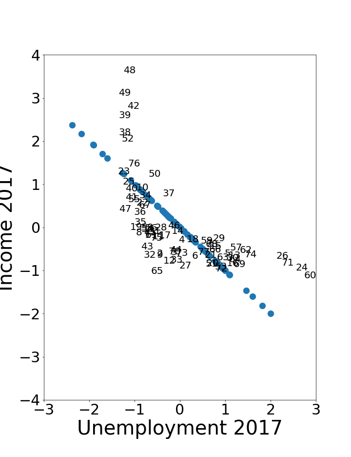
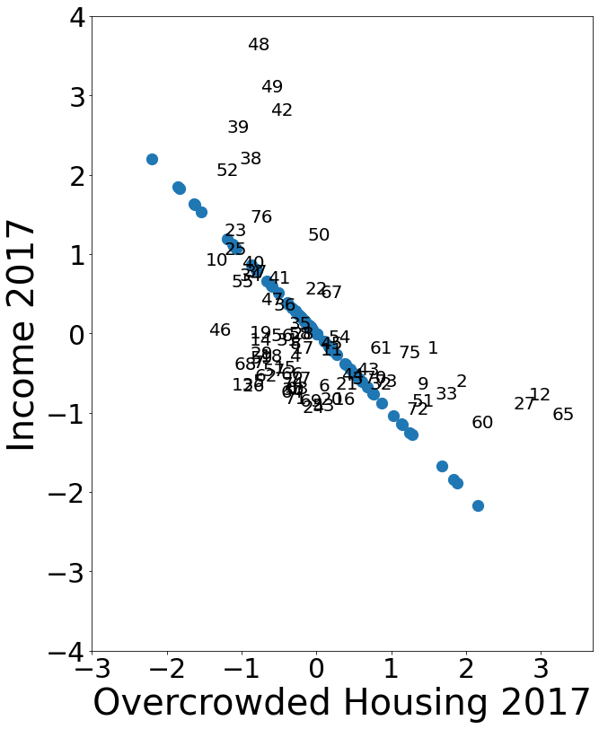
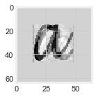
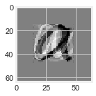
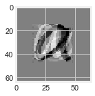

10.4. 4. Dimension Reduction by Principal Component Analysis#
Principal component analysis (PCA) is used to reduce high-dimensional data by projecting the data onto a much-lower-dimensional subspace. The subspace is chosen so that the variance of the projected data points is maximized.
For a simple example illustrating why maximizing the projected variance is useful, consider the scatterplot of COVID test rates and death rates by Chicago ZIP Code as shown in the figure below. For the ZIP Codes in the shaded portion of the scatterplot, we notice a much higher variance in the death rate than in the test rate. Hence, from the death rate for a ZIP Code, we would expect to learn more than from its test rate; the test rates are roughly the same for all ZIP Codes, but there is considerable spread in the death rates. Thus, if we wish to reduce the dimensionality of the data, it would be more informative to project onto the death rate rather than onto the test rate, since the former has greater variance. Dimension reduction is based on projections that maximize variance.

Chicago ZIP Codes shown in the shaded portion of the scatterplot have a variance of roughly 0.1 for the standardized test rate and 0.9 for the standardized death rate. (ZIP Code 60604, which includes the Chicago Board of Trade, Federal Building, and Chicago Symphony Center, has a standardized test rate of 5.7 and is not shown.)
10.4.1. Variance and Covariance for Mean-centered Data#
Consider real data values \(\mathbf{x}\) with mean \(\bar{x}\) and \(\mathbf{y}\) with mean \(\bar{y}\).
i) The variance \(Var(\mathbf{x})\) of \(\mathbf{x}\) and variance \(Var(\mathbf{y})\) of \(\mathbf{y}\) are
ii) The covariance of \(\mathbf{x}\) and \(\mathbf{y}\) (denoted \(Cov(\mathbf{x},\mathbf{y})\) is
Note that \(Cov(\mathbf{x},\mathbf{y})=Cov(\mathbf{y},\mathbf{x}).\) Furthermore, for mean-centered data (\(\bar{x}=0\) and \(\bar{y}=0\)), the formulas simplify to
The variance measures how far the data are spread away from the mean, and the covariance measures the correspondence between \(x\) and \(y\) values.
10.4.2. Covariance Matrix#
Consider an \(n\times m\) data matrix \(\mathbf{X}\) where each row represents a different data point (e.g., \(n\) people) and each column represents one of \(m\) different features (e.g., height, weight, age, etc.). We assume that the columns have all been mean-centered. Define the real covariance matrix \(\mathbf{A}\) as
\(\mathbf{A}\) must be symmetric since \(\mathbf{A}^T=\frac{1}{n}\mathbf{X}^T(\mathbf{X}^T)^T=\frac{1}{n}\mathbf{X}^T\mathbf{X}=\mathbf{A}.\) (Recall that \((\mathbf{M}\mathbf{N})^T=\mathbf{N}^T\mathbf{M}^T.\))
As a consequence of the definition of \(\mathbf{A}\) and as illustrated in the following example, the \((i,i)\) entry of the covariance matrix \(\mathbf{A}\) is the variance of the \(i^{th}\) column of the data matrix \(\mathbf{X}\), and the \((i,j)\) entry (\(i\neq j\)) of the covariance matrix \(\mathbf{A}\) is the covariance of the \(i^{th}\) and \(j^{th}\) columns of the data matrix \(\mathbf{X}\).
10.4.2.1. Example#
Consider the data points \((-5,0)\), \((0,2)\), \((5,-2)\). The data are mean-centered. We have \(Var(\mathbf{x})=[(-5)^2+0^2+5^2]/3=50/3\), \(Var(\mathbf{y})=[0^2+2^2+(-2)^2]/3=8/3\), and \(Cov(\mathbf{x},\mathbf{y})= [(-5)(0)+0(2)+5(-2)]/3=-10/3.\)
For the corresponding data matrix
the mean of both columns is zero. The covariance matrix is
As expected, the \((1,1)\) entry of \(\mathbf{A}\) gives \(Var(\mathbf{x})=50/3\), the \((2,2)\) entry gives \(Var(\mathbf{y})=8/3\), and the \((1,2)\) and \((2,1)\) entries both give \(Cov(\mathbf{x},\mathbf{y})=Cov(\mathbf{y},\mathbf{x})=-10/3\).
10.4.3. Projected Variance#
Consider the data points \((x_1,y_1),(x_2,y_2),\dots,(x_n,y_n)\). We assume that the data are mean-centered, so \(\bar{x}=\bar{y}=0\). Our goal in this section is to find a simple matrix expression that can be used to compute the variance VAR of these data projected onto a line \(L_{\mathbf{u}}\) through the origin determined by a unit vector \(\mathbf{u}=(u_1,u_2)\). Referring to the left panel of the figure below, note that
On the other hand, if we write \(\mathbf{u}\) as a \(2\times 1\) column vector, VAR can also be computed as the matrix product \({\mathbf{u}}^T\mathbf{A}\mathbf{u}\):

(Left) Projected value \(s_i\) of a data point \((x_i,y_i)\) onto a line through the origin determined by a unit vector \(\mathbf{u}=(u_1,u_2)\). (Right) Projection of the 3 data points \((-5,0)\), \((0,2)\), and \((5,-2)\) onto the line \(L_{\mathbf{u}}\) determined by the unit vector \(\mathbf{u}=(1/\sqrt{2},1/\sqrt{2})\). The values \(s_1\), \(s_2\), and \(s_3\) determine the variance \(\text{VAR}=\frac{1}{3}(s_1^2+s_2^2+s_3^2\)) of the projected points on \(L_{\mathbf{u}}\).
10.4.4. Example 4.2.#
Let us project the three data points \((-5,0)\), \((0,2)\), and \((5,-2)\) onto the line \(L_{\mathbf{u}}\) through the origin determined by the unit vector \(\mathbf{u}=(u_1,u_2)=(\frac{1}{\sqrt{2}},\frac{1}{\sqrt{2}})\) (see the right panel of the figure above). If we write \(\mathbf{u}\) as a \(2\times 1\) column vector, the variance VAR of the projected points is equal to \(\mathbf{u}^T\mathbf{A}\mathbf{u}\):
10.4.5. Maximization of Projected Variance by Principal Component Analysis#
Given an \(n\times m\) data matrix \(X\) whose columns all have mean zero, the \(m\times m\) covariance matrix \(\mathbf{A}\) is the symmetric matrix
Since the \(m\times m\) covariance matrix \(\mathbf{A}\) is a real symmetric matrix, it has \(m\) linearly independent eigenvectors \(\mathbf{v}_1,\mathbf{v}_2,\dots,\mathbf{v}_m \in \mathbf{R}^m\) with \(m\) real eigenvalues \(\lambda_1\ge\lambda_2\ge\dots\ge\lambda_m.\) The first two principal components solve the following optimization problems:
(First principal component) Find vector \(\mathbf{v}_1\) (written as an \(m\times 1\) column vector) that will
such that \(\|\mathbf{v}_1\|^2=1.\) When the data is projected onto the line \(\mathbf{L_{v_1}}\) through the origin determined by the unit vector \(\mathbf{v}_1\), \(J(\mathbf{v}_1)\) is the variance of the data along that line.
The choice of \(\mathbf{v}_1\) that maximizes the variance is a unit eigenvector of \(\mathbf{A}=\frac{1}{n}\mathbf{X}^T\mathbf{X}\) that has the largest eigenvalue [Aggarwal 2020].
Second principal component Find vector \(\mathbf{v}_2\) (written as an \(m\times 1\) column vector) that will
such that \(\|\mathbf{v}_2\|^2=1\) and \(\mathbf{v_1}\cdot\mathbf{v}_2=0.\) The vector \(\mathbf{v}_1\) is the one obtained in the first step as the first principal component; \(\mathbf{v}_2\) must be orthogonal to \(\mathbf{v}_1\) and captures as much of the remaining variance in the data as possible that was not captured by \(\mathbf{v}_1\).
More generally, to achieve our goal of dimensionality reduction we consider the following:
PRINCIPAL COMPONENT ANALYSIS OPTIMIZATION PROBLEM
The first \(k\) principal component vectors \(\mathbf{v}_1,\dots\mathbf{v}_k\) will
subject to \(\|\mathbf{v}_i\|^2=1\) for all \(i=1,\dots,k\) and \(\mathbf{v}_i\cdot\mathbf{v}_j=0\) for all \(i\neq j\). The vectors \(\mathbf{v}_1,\dots\mathbf{v}_k\) are orthonormal eigenvectors of \(\mathbf{A}\) with the largest eigenvalues.
Typically, only a few of the non-negative eigenvalues of the positive semi-definite matrix \(\mathbf{A}\) are relatively large. Assemble the \(k\) principal unit eigenvectors with the largest eigenvalues (principal components) as the columns of a \(m\times k\) matrix \(\mathbf{Q}_k\). The transformed data matrix \(\mathbf{X}_k=\mathbf{X}\mathbf{Q}_k\) is an \(n\times k\) matrix that is a reduced \(k\)-dimensional feature representation (\(k<<m\)) of the original \(n\times m\) data matrix \(\mathbf{X}\). The PCA reduced matrix \(\mathbf{X_k}\) captures as much of the variance of the original data matrix as is possible by a \(k\)-dimensional subspace [Aggarwal 2020].
Not all \(m\) features of the data set may be equally important in describing the data. PCA can be viewed as providing a sequence of best-fit subspaces of dimensions \(k=1,2,\dots, m-1\). These subspaces minimize the projected squared distances from the data and maximize the variance of the projected data. JNB Exercise 5 illustrates how PCA can be used to reduce high-dimensional (\(N\times N\)-pixel) vector representations of letter images. After projecting these \(N^2\) dimensional vectors onto a two-dimensional subspace determined by the first two principal components, and then converting the projected vectors back to an image, we still maintain a good idea of the original letters. This would not be the case if we projected the image vectors onto a two-dimensional subspace determined by any two of the \(N^2\) standard basis vectors \(\mathbf{e_1}=(1,0,0,\dots,0)\), \(\mathbf{e_2}=(0,1,0,\dots,0),\dots,\mathbf{e_{N^2}}=(0,0,0,\dots,1).\)
10.4.6. Exercises#
Exercises
Answer the following:
a) \(\,\) Use the covariance matrix to determine the variance and covariance of the \(x\) and \(y\) coordinates of the points \((-1,3),(0,0),(1,-3)\).
b) \(\,\) Use a principal component to determine on what line should we project the points \((-1,3),(0,0),(1,-3)\) to maximize the variance on that line.
\(\,\) Consider the \(n\times m = 4\times 3\) data matrix \(\mathbf{X}\) defined as
Each row represents a person, so there are data for \(n=4\) people. Each column represents a feature, so there are \(m=3\) features (e.g., height, weight, and age.) We assume that the columns are mean-centered and in standard units. Person 1 is tall and heavy, with average age. Person 2 has average height and weight and is older. Person 3 is average height and weight and is younger. Person 4 is relatively short and light, with average age.
a) \(\,\) Find the symmetric \(m\times m\) covariance matrix \(\mathbf{A}=\frac{1}{n}\mathbf{X}^T\mathbf{X}\)
b) \(\,\) Find the eigenvalues and eigenvectors of \(\mathbf{A}\) What are the first, second, and third principal components?
c) Explain how the variance is maximized by the principal components.
\(\,\) Consider the \(n\times m = 4\times 3\) data matrix \(\mathbf{X}\) defined as
a) \(\,\) Without calculating eigenvectors, conjecture the first two principal components.
b) \(\,\) Check your answer to a) by computing the eigenvectors of the covariance matrix \(\mathbf{A}=\frac{1}{n}\mathbf{X}^T\mathbf{X}.\)
Answer the following:
a) \(\,\) Using the JNB PRINCIPAL COMPONENT ANALYSIS at https://tinyurl.com/2neb4z4c, the figure below shows a scatterplot of standardized hardship index data for unemployment over age 16 and per capita income [UIC Great Cities 2017]. The original data is labeled by the number of the Chicago community area (1–77). What do the projected points indicate?
{kind=link}
b) \(\,\) The figure below shows overcrowded housing and per capita income. Find a difference between this graph and the graph for unemployment in part a)
{kind=link}
4.5 \(\,\) a) \(\,\) We can illustrate the dimensionality reduction capacity of PCA by applying it to character recognition. The Jupyter Notebook PRINCIPAL COMPONENT ANALYSIS at https://tinyurl.com/2neb4z4c shows how to take a collection of eight 64\(\times\)64 bit images of the letters a' and b’, and project each letter onto a two-dimensional subspace determined by the first two principal components. Referring to the figures below, explain why the original image is \(64^2=4096\)-dimensional and the PCA image is only two-dimensional.
Original 64x64 pixel image.

2-dimensional representation is obtained by projecting the original image onto a 2-dimensional subspace determined by the first two principal components. 
{kind=link}
b) \(\,\) The basis vectors \({\mathbf v_1}\), \({\mathbf{v}_2}\) for the two-dimensional subspace determined by PCA correspond to the images in the figures below. The reduced dimensional representation of the letter ‘a’ in part \({\bf a)}\) is the linear combination \(2560.3{\mathbf{v}_1}-2207.85\mathbf{v_2}\). What would happen if we used two standard basis vectors \(\mathbf{e}_i\), \(\mathbf{e}_j\) to determine the subspace of projection? For example, what would happen if we choose \(\mathbf{e_1}=(1,0,0,\dots,0)\) and \(\mathbf{e_2}=(0,1,0,0,\dots,0)\)?
Images corresponding to the PCA 2D basis vectors \(\mathbf{v}_1,\mathbf{v}_2\).
 

{kind=link}